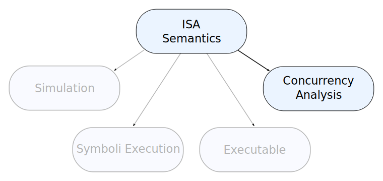

class: center
# Executable ISA specification

.center[]
---

```
read  :: Key -> f Value
write :: Key -> f Value -> f ()
```
---
## Load

```
load reg addr = \read write -> Just $
    write (Register reg) (read (Address addr))
```

## Jump

```
jump offset = \read write -> Just $
    write IC ((+ offset) <$> (read IC))
```

## Add

```
add reg addr = \read write -> Just $
    let result = (+) <$> read (Reg reg) <*> read (Addr addr)
        isZero = (== 0) <$> result
    in  write (Reg reg) result *>
        write (Flag Zero) (boolToValue <$> isZero)
```

???

Make here two columns with the graphs from the papers on the right.

---
class: center
# Executable ISA specification

.center[]

